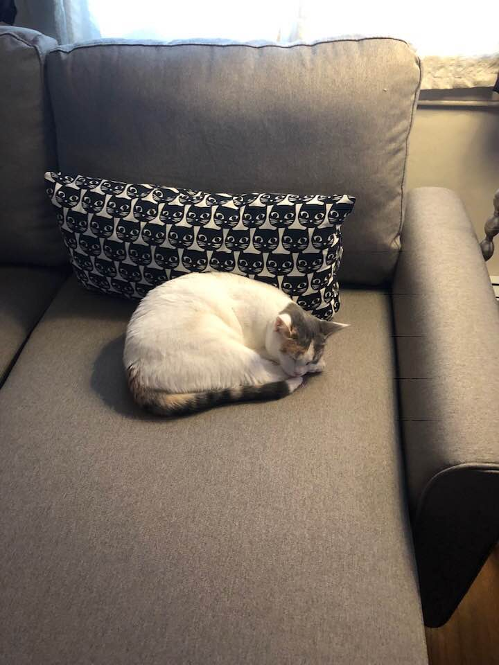
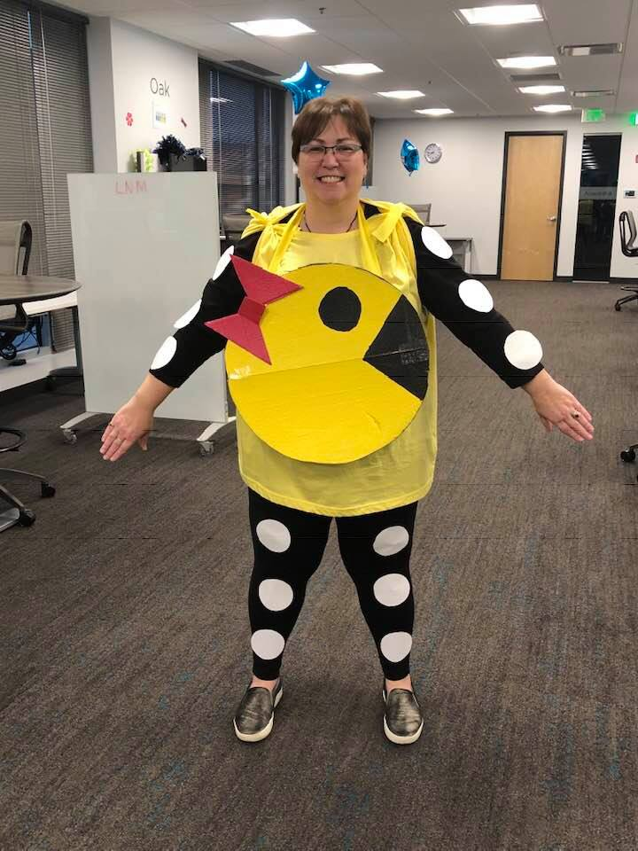

I spent my growing up years in Anchorage, Alaska. I like to read/listen to books (all genres), visiting museums and other historical places. I am a Washington Capitals fan, a Baltimore Orioles fan, a Baltimore Blast fan, and a Baltimore Ravens fan.

I am learning to code so I can make better hiring decisions when it comes to front end developers. Plus I love certifications!
